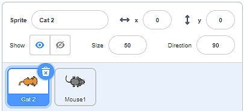
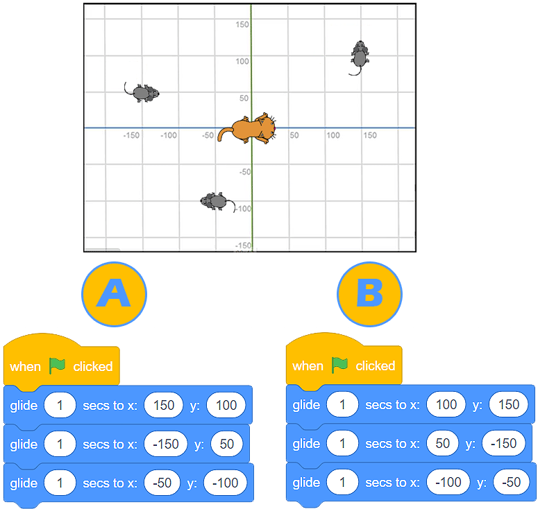
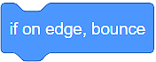
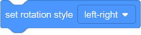
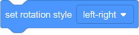
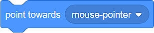

Lëvizja¶
Tashmë u njohët me ndërfaqen e përdoruesit Scratch, keni mësuar se si të krijoni sprites dhe të përcaktoni pozicionin e tyre në skenë. Tani është një kohë e përsosur për të mësuar se si t’i lëvizni duke përdorur komanda (blloqe) nga kategoria Motion. Këto blloqe do t’ju mundësojnë të bëni lojëra dhe animacione të thjeshta.
Ekzistojnë 3 lloje të blloqeve që mund të përdorni për të lëvizur spërkatjen tuaj:
Bllokime për lëvizje absolute
Bllokime për lëvizje relative
Blloqe të tjera lëvizjeje
Blloqe për lëvizje absolute¶
Në kategorinë Motion, ka 4 blloqe, të cilat mundësojnë lëvizje absolute.

Do t’i përdorni këto blloqe kur të keni nevojë për të programuar sprite-in tuaj për të kaluar në një lokacion specifik (pikë) në skenë.
Macja po ndjek mausin …
Macja është e vendosur në qendër të fazës, dhe miu është në pikë (x:150 y:100).

Ju kujtojmë që faza është një sipërfaqe drejtkëndëshe 480 pixel e gjerë dhe 360 pixel e lartë. Qendra ka koordinatat (x:0 y:0).
Nëse dëshironi që macja të kapë miun thjesht mund të përdorni bllokun  .
.

Nëse dëshironi që ndjekja të zgjasë më shumë, mund të përdorni bllokun  Me këtë bllok macja do të rrëshqasë për 1 sekondë nga pika (x:0 y:0) tek pika (x:150 y:100).
Me këtë bllok macja do të rrëshqasë për 1 sekondë nga pika (x:0 y:0) tek pika (x:150 y:100).
Duke përdorur blloqet  dhe
dhe  ju mund ta bëni atë të duket sikur macja ngadalë po vret miun:
ju mund ta bëni atë të duket sikur macja ngadalë po vret miun:

Ju gjithmonë mund të shihni pozicionin aktual të sprite (vlerat aktuale të x: dhe y:) poshtë fazës, në listën e sprite.
- Programi A
- Te lumte! Macja "kapi" të gjithë minjtë!
- Programi B
- Hm .. Ne ju rekomandojmë që të lexoni me kujdes mësimin Pozicioni i sprite në skenë.
Q-5: Analizoni pozicionin e minjve të paraqitur në figurën më poshtë dhe zgjidhni programin, i cili do të lejojë që macja të “kapë” të gjithë minjtë.

 Kështu që, duke përdorur blloqet për lëvizje absolute, ju i tregoni burimit tuaj saktësisht se ku duhet të shkojë në skenë.
Kështu që, duke përdorur blloqet për lëvizje absolute, ju i tregoni burimit tuaj saktësisht se ku duhet të shkojë në skenë.
Blloqe për lëvije relative¶
Lëvizja relative nuk përcaktohet nga vendndodhja që duhet të shkojë sprite, por nga pozicioni aktual i sprite.
Në kategorinë Lëvizja, ju keni në dispozicion disa blloqe, të cilat mundësojnë lëvizje relative.

Në shembullin ku macja po ndiqte miun, ne e dinim vendndodhjen e saktë të miut (pika në të cilën ndodhet). Situatat ku ne nuk e dimë vendndodhjen e sprite janë më të zakonshme. Në këto raste, ne do të përdorim blloqe për lëvizje relative për të lëvizur sprite-n tonë.
Kur bëhet fjalë për lëvizje relative, është shumë e rëndësishme të tregoni (ktheni) sprite në drejtimin e dëshiruar. Ne e arrijmë këtë duke tërhequr shigjetën rreth rrethit të bllokut  .
.
Është mirë që ju të dini që drejtimi drejt 0 përfaqëson lart, drejt 90 është në të djathtë, drejt 180 është poshtë, dhe në drejtim të -90 është në të majtë.

Mund të shihni gjithashtu drejtimin e tanishëm të sprite poshtë fazës, në listën e sprite në fushën ** Direction**.
- Drejtimi: 90 (djathtas) Pozicioni: (x: 50 y: -100)
- Analizoni përsëri programin. A e ndryshon kthesën e sprite 90 gradë
- Drejtimi: 180 (poshtë) Pozicioni: (x: 50 y: 100)
- Shumë mirë! Ju e kuptoni mirë lëvizjen e sprite!
Analizoni programin e paraqitur në figurë, dhe zgjidhni atë që mendoni se është drejtimi i sprite, si dhe cili do të jetë pozicioni i tij pasi programi të mbarojë së ekzekutuari.

{kind=link}
Pra, duke përdorur blloqe për lëvizje relative, ju i thoni sprite ku të tregojë dhe lëvizë në lidhje me pozicionin e tij aktual.
Të tjera blloqe lëvizje¶
Në kategorinë Motion, ju keni në dispozicion edhe 4 blloqe të tjera, të cilat mundësojnë lëvizjen e sprites.
Skena është një hapësirë e kufizuar. Kur sprite arrin skajin e skenës, do të ishte e natyrshme që ajo të kthehet dhe të vazhdojë të lëvizë në një drejtim tjetër. Ju do të mundësoni këtë sjellje të sprite duke përdorur bllokun . Ju gjithashtu do të vendosni se si sprite vazhdon të lëvizë. Nëse brenda bllokut  e vendosni stilin e rrotullimit të sprite në rreth, do të vazhdojë të lëvizë kokëposhtë. Kjo nuk do të ndodhë nëse, nga lista rënëse e bllokut, ju zgjidhni opsionin majtas-djathtas .
e vendosni stilin e rrotullimit të sprite në rreth, do të vazhdojë të lëvizë kokëposhtë. Kjo nuk do të ndodhë nëse, nga lista rënëse e bllokut, ju zgjidhni opsionin majtas-djathtas .

Ju gjithmonë mund të shihni stilin aktual të lëvizjes së sprite tuaj nën fazën në listën e sprite, në fushën Direction.
{kind=link}
Le të kthehemi te spritet tona:  and
and  .
.
Nëse nuk e dimë pozicionin e saktë të miut, dhe duam që macja të drejtohet drejt tij (të drejtohemi drejt tij), mund të përdorim bllokun . Thjesht duhet të zgjedhim Sprite Mouse  nga lista e lëshuar, dhe problemi është zgjidhur.
nga lista e lëshuar, dhe problemi është zgjidhur.
Ne do t’ju tregojmë se si funksionojnë dy blloqet e fundit në shembullin e mëposhtëm.
Macja po ndjek mausin …
Macja po ndjek mausin, duke rrëshqitur drejt tij. Miu vazhdimisht kthehet dhe shkon drejt kursorit, të cilin po lëvizim nëpër skenë.

Mbi secilën nga sprites janë skriptet që mundësojnë sjelljen e përshkruar.
 Përditësoni programin e paraqitur më sipër duke shtuar një tjetër sprite - një mollë. Kërkoni miun të ndjekë mollën dhe macja të ndjekë miun. Bëni mollën të lëvizë drejt kursorit (të cilin ne e kontrollojmë), miu duhet të lëvizë drejt mollës, dhe macja duhet të lëvizë drejt miut.
Përditësoni programin e paraqitur më sipër duke shtuar një tjetër sprite - një mollë. Kërkoni miun të ndjekë mollën dhe macja të ndjekë miun. Bëni mollën të lëvizë drejt kursorit (të cilin ne e kontrollojmë), miu duhet të lëvizë drejt mollës, dhe macja duhet të lëvizë drejt miut.
{kind=link}
Zgjidhje e mundshme: